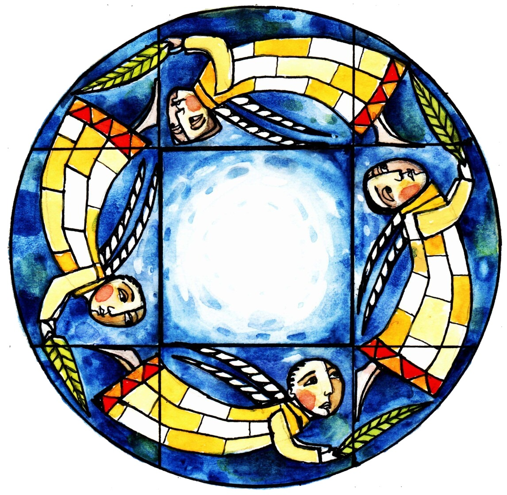
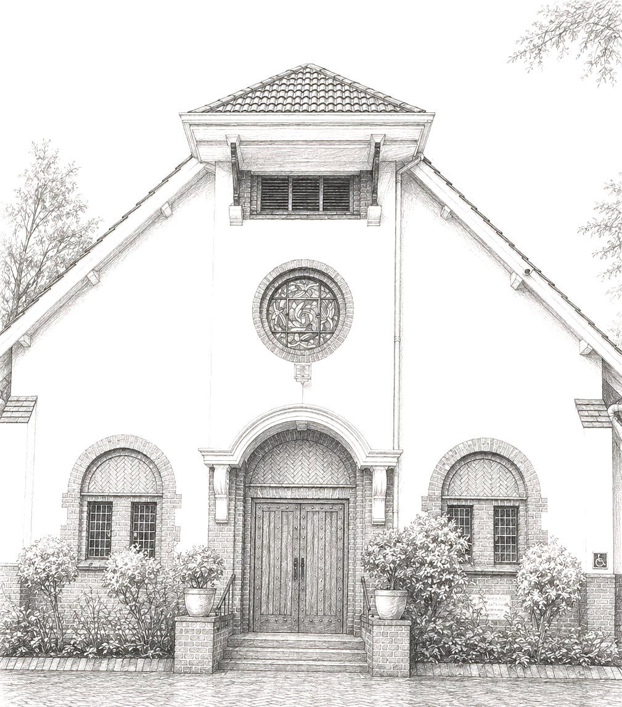
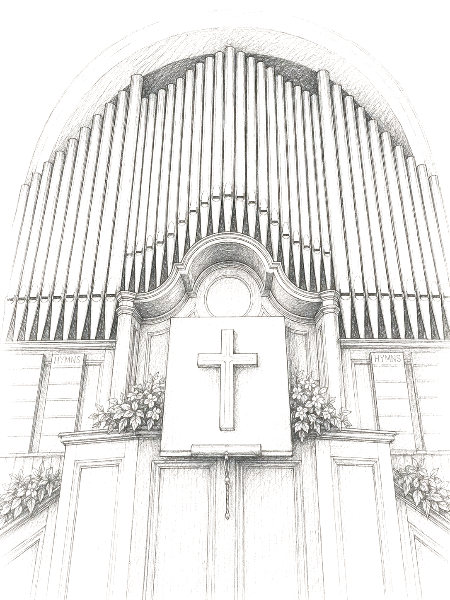

A hundred years after this building opened its doors, the organ takes the lead for an evening. Winand Grundling plays it at full voice, joined by soprano Annatjie Joubert, and the evening carries on afterwards over cheese and wine. The proceeds go to the church's centenary fund.
Four steps. Your seats are held as soon as the payment reflects.
The organ has stood at the front of this church for generations, heard every Sunday and seldom given a night of its own. This evening is that night: the full range of the instrument, from its quietest stops to the moment every pipe is speaking at once.
Draft copy - replace with the organ's history and specification.

A Stellenbosch University alumnus and a familiar name on South African organ programmes, Winand Grundling has built a reputation for playing that is as much about colour as it is about power.
Draft bio - send me his own wording and I'll drop it in.
A classically trained opera singer who read for her BMus at Rhodes University, Annatjie Joubert joins the organ for several works across the evening.
Draft bio - send me her own wording and I'll drop it in.
The congregation began in 1899 as a Presbyterian congregation, and became Stellenbosch United Church in 1990 when it united locally with the Uniting Congregational Church of Southern Africa. It is a multicultural congregation with two campuses, one in Stellenbosch and one in Kayamandi, which worship together through the year.
The building on Van Riebeeck Street has been its home for a century, and this concert opens the centenary year. What is raised goes to the church's centenary fund.
Alongside the Sunday services the congregation runs the Stellenbosch United Church Education Trust, founded in 2005 to mentor and support students who are the first in their family to study at a university.
Draft copy from the church's own website - please check it, and confirm what 1926 marks.
Honderd jaar nadat hierdie gebou sy deure oopgemaak het, kry die orrel 'n aand van sy eie. Winand Grundling speel dit op volle stem, met sopraan Annatjie Joubert aan sy sy, en die aand gaan daarna voort oor kaas en wyn. Die opbrengs gaan na die kerk se eeufeesfonds.
Vier stappe. Jou plekke word gehou sodra die betaling reflekteer.
Die orrel staan al geslagte lank voor in hierdie kerk, elke Sondag gehoor maar selde op sy eie. Vanaand is daardie aand: die volle omvang van die instrument, van sy stilste registers tot die oomblik wanneer elke pyp saam praat.
Konsepteks - vervang met die orrel se geskiedenis en spesifikasie.
'n Alumnus van die Universiteit Stellenbosch en 'n bekende naam op Suid-Afrikaanse orrelprogramme. Sy spel gaan net soveel oor kleur as oor krag.
Konsepteks - stuur sy eie bewoording en ek plaas dit.
'n Klassiek opgeleide operasangeres wat haar BMus aan Rhodes Universiteit voltooi het. Sy sluit by die orrel aan vir verskeie werke deur die aand.
Konsepteks - stuur haar eie bewoording en ek plaas dit.
Die gemeente het in 1899 as 'n Presbiteriaanse gemeente begin en het in 1990 Stellenbosch United Church geword met die plaaslike vereniging met die Uniting Congregational Church of Southern Africa. Dit is 'n multikulturele gemeente met twee kampusse, een in Stellenbosch en een in Kayamandi, wat deur die jaar saam aanbid.
Die gebou in Van Riebeeckstraat is al 'n eeu lank sy tuiste, en hierdie konsert open die eeufeesjaar. Wat ingesamel word, gaan na die kerk se eeufeesfonds.
Naas die Sondagdienste bedryf die gemeente die Stellenbosch United Church Education Trust, in 2005 gestig om studente te ondersteun en te mentor wat die eerste in hul familie is om universiteit toe te gaan.
Konsepteks vanaf die kerk se eie webwerf - kontroleer dit asseblief, en bevestig wat 1926 aandui.